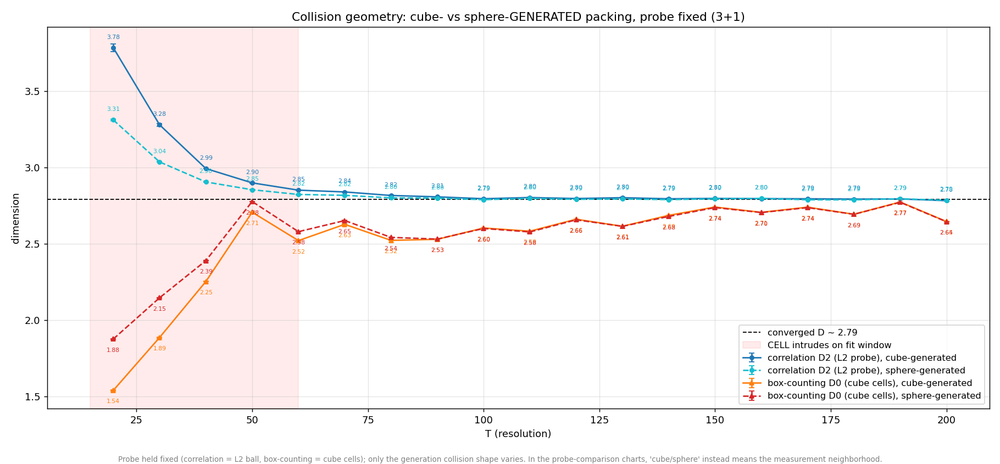
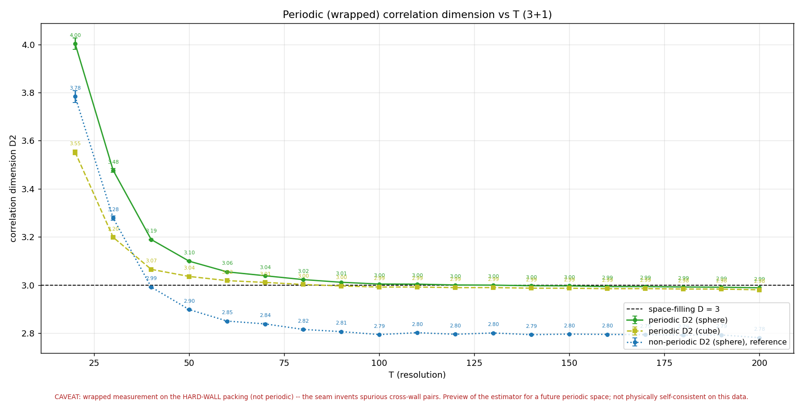
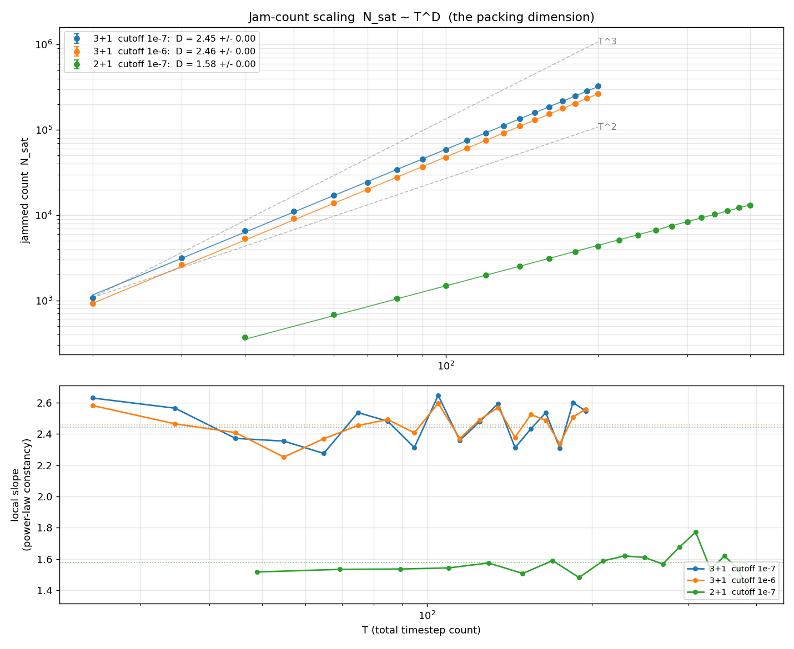

The packing engine excludes overlapping worldlines using a distance test.
By default that test is a Chebyshev cube (an axis-aligned L∞ box);
the “euclid” variant swaps it for an L2 sphere. The question:
does the shape of the exclusion region change the packing dimension?
This chart holds each estimator (and its probe) fixed and varies only the
collision geometry the data was generated with — the honest
apples-to-apples test.

Correlation D2 (L2 probe) and box-counting D0 (cube cells), each measured
on cube-collision and sphere-collision dumps, seed-averaged vs resolution
T (3+1). The probe is held fixed (correlation = L2 ball, box-counting =
cube cells); only the generation collision shape varies. Solid =
cube-generated, dashed = sphere-generated. Shaded band = low T where the
packing cell intrudes on the fit window.
Result: collision geometry does not matter. Converged
over T ≥ 100:
Both differences are well inside the seed error bars; the solid and dashed
curves are visually indistinguishable above the shaded band. The ~0.11
gap that remains is between the two estimators (D2 vs D0 of a
mildly multifractal object) — a q-moment effect, not a collision-shape
effect. Correlation converges from above and box-counting from below, so
they sandwich the D ≈ 2.79 line. This closes the loop: switching the
packing exclusion from cubes to spheres leaves the dimension unchanged.
Boundary handling: the sphere/cube gap is an edge artifact — and a wrapped-measurement preview
Investigation prompted by a question on the correlation numbers ·
code
494940e
The correlation dimension was reported two ways — a sphere (L2) probe
giving D2 ≈ 2.79 and a cube (L∞) probe giving ≈ 2.71.
Digging into why they differ turned up something more basic: the standard
C(r) = pairs-within-r / all-pairs estimator silently assumes the
sample is either periodic or edge-corrected, and our packing is
neither — the engine treats |X| = 1 as a hard
wall and an edge-weighted sampler piles density right against it. So every
boundary point is missing the neighbors that would sit outside the box,
which suppresses C(r) at larger r and drags the fitted slope down.
Two controls nail it. On a uniform cloud whose true dimension is exactly 3,
the naive estimator returns 2.87 (sphere) / 2.82 (cube) — both wrong, split
by ~0.045 — purely from the boundary. Removing the boundary (interior-only
centers, or periodic wrapping) restores 3.00 for both probes, gap
→ 0. So the sphere/cube difference is a finite-window edge
artifact, not structure: the dimension of a set does not depend on the
shape of the ruler once the boundary is handled.
As a preview of the estimator we'll use once a genuinely periodic space
exists, we ran the wrapped (toroidal minimum-image) correlation dimension
on the current data:

Wrapped correlation dimension D2 vs T (3+1), sphere and cube probes,
seed-averaged. Both converge onto the space-filling D = 3 line, on top of
each other (gap ~0.01), while the non-periodic reference sits at 2.79.
Caveat, loudly: this wrapped measurement is run on the
hard-wall packing, which is not periodic. Because the sampler
stacks density on both walls, wrapping glues those sheets together and
invents spurious cross-seam pairs that homogenize the cloud — which is why
the wrapped value (2.997) sits almost exactly on the uniform control
(3.000). So the 3.0 here is not the packing's real dimension;
it is a method preview. The takeaway that is solid: the 2.79/2.71
split and the sub-3 value were boundary effects, and the true dimension is
still bracketed and pending a boundary-controlled measurement (edge-corrected
on the bounded model, or wrapped on a genuinely periodic one).
The direct packing dimension: jam-count scaling gives D ≈ 2.46 (3+1)
Chris: the packing dimension is the growth of the jam across
total-timestep counts, not a single-slice measure · code
9d64007
The packing dimension we actually care about is how the jammed worldline
count grows with resolution: a 20-step universe and a 200-step universe
jam at very different counts, and the slope of log N_sat vs
log T is D. This is the direct measurement — no snapshot, no
boundary, no probe. Fitted across the T-ladder (weighted log-log slope +
seed bootstrap):
3+1: D = 2.45 ± 0.00 (full ladder), 2.47 for T ≥ 100
2+1: D = 1.58 ± 0.00

Jam count N_sat vs total resolution T (log-log), 3+1 at both stopping
cutoffs and 2+1, with T² / T³ reference guides. Lower panel: local slope
vs T — flat, confirming a clean power law.
Three things make this solid: it's a clean power law (the
local slope is flat across the ladder — low-T half and high-T half both
≈ 2.46, the scatter is just seed noise, no crossover), it's
cutoff-robust (1e-7 vs 1e-6 move D by < 0.02), and it
reproduces the original nvt analysis (~2.50). D < 3 is
the cost of the joint across-time exclusion: pure spatial packing would give
T³, but avoiding every other worldline at every timestep suppresses it to
~T².⁴⁶.
The reconciliation: the long-standing 2.79 headline was
always the correlation dimension (a single-slice measure), never
this count scaling. The direct packing dimension is ≈ 2.46, and the various
estimates do not agree — count 2.46, box-counting 2.65, correlation
2.79 (boundary-biased) / ~3.0 (boundary-free). They span 2.46 → 3.0 because
they measure genuinely different things; the count scaling is the direct,
robust one. Whether the geometry of the correct (spacetime, across-timestep)
object agrees with the count's 2.46 is the open cross-check.